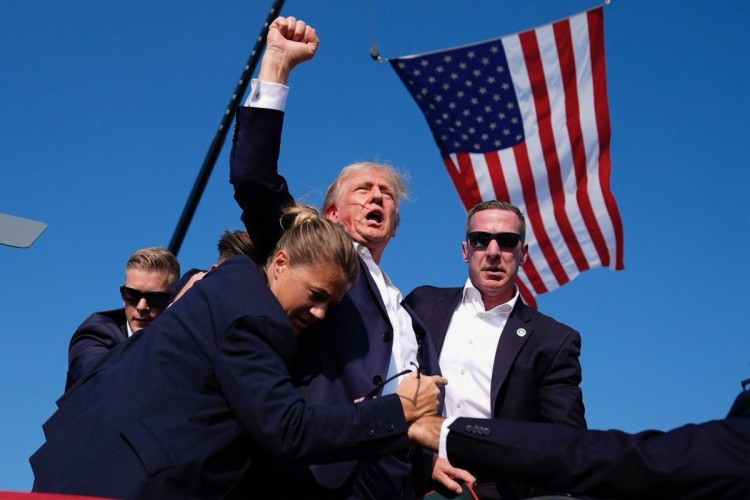

Donald Trump Shot in Shocking Attack
In an unprecedented and shocking event, former President Donald Trump was shot earlier today during a public appearance. The incident took place while Trump was delivering a speech at a rally in New York City...
The shooter, who has been identified as a lone gunman, opened fire from a nearby building, causing panic and chaos among the crowd. Emergency services responded immediately, and Trump was rushed to a nearby hospital where he is currently undergoing surgery.
Authorities are still investigating the motives behind the attack, but early reports suggest it may be politically motivated. Security has been tightened across the city as law enforcement agencies work to prevent any further incidents.
Political leaders from both parties have condemned the attack, calling for unity and peace in these difficult times. President Joe Biden released a statement expressing his deep concern and wishing Trump a speedy recovery.
The situation is still developing, and we will continue to provide updates as more information becomes available.